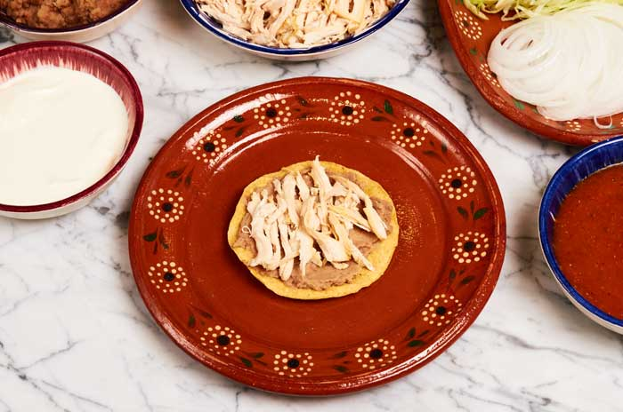

Home
Chicken Tostadas Recipe

Description
This is a classic mexican dish, that is easy to make and contains a fair
amount of protein and fiber, which puts this dish on the healthier side.
Ingredients
- Tostadas
- Beans
- Chicken breast
- Grated Cheese
- Avocado
Steps
- Boil the chicken until fully cooked
- Let it cool and cut up the chicken into many bits
- Heat up some beans from a can, and spread them onto a tostada
- Add cheese on top of the beans
- then add a handful of chicken to each tostada
- Finally, slice some avocado and add them evenly on top of the chicken